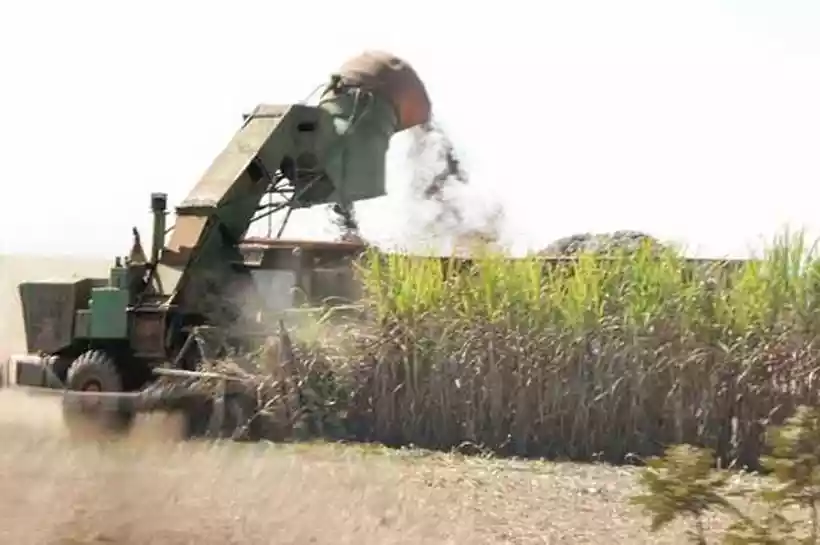
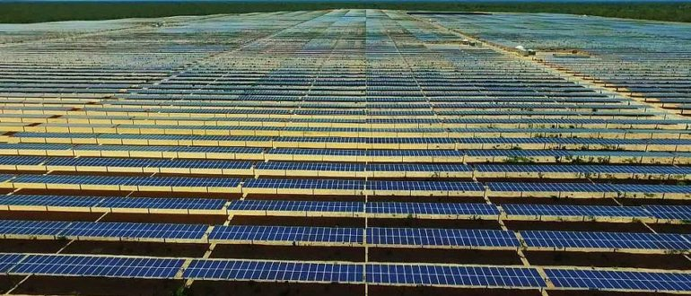

A Agricultura 4.0, uma revolução tecnológica que busca transformar e otimizar os processos agrícolas por meio da integração de tecnologias digitais avançadas, tornou-se uma realidade que está transformando a rotina dos produtores rurais e aprimorando as condições de vida em comunidades rurais ao redor do mundo. Destacam-se diversas histórias inspiradoras de agricultores que sofreram o impacto positivo da agricultura 4.0 em suas terras.
Inovação e Tecnologia Transformando a Agricultura no Triângulo Mineiro
Jonada Ma, renomado agrônomo e co-proprietário da empresa MA Shou Tao, localizada em Uberaba, no pitoresco Triângulo Mineiro, gerencia uma plantação de grãos totalmente automatizada há mais de trinta anos. Da mesma forma, a mecanização alcançou a plantação de cana-de-açúcar há um pouco mais de cinco anos.
Durante a colheita da cana-de-açúcar, Jonada coordenou uma equipe de 150 trabalhadores, porém, ele esclarece que hoje esses colaboradores encontraram novas oportunidades em ocupações que demandam um maior nível de conhecimento. Além disso, muitos migraram para os centros urbanos em busca de novas perspectivas profissionais.
“Muitos deles são agora tratoristas. Treinamos também o pessoal para ser operadores de máquinas, trabalhando em uma situação melhor, inclusive com ar-condicionado.”
Fonte: Jornal Estado de Minas
O agricultor explica que a tecnologia influencia diretamente no rendimento da lavoura.
 Lavoura de cana-de-acúçar em Minas: no estado, plantio e colheita da planta já são 80% mecanizados e até 2014 não deverão contar mais com trabalho humano(foto: (Beto Novaes/EM/D.A Press - 24/6/10) )
Agricultor Aumenta sua Produção com a Agricultura 4.0
O viticultor Geraldo Rigo, de Pinheiro Preto, também optou por investir na colheita mecanizada. Ele afirma que, apesar do investimento elevado, os resultados positivos já são evidentes em sua vida rural. Além disso, Geraldo compartilha sua experiência com a máquina utilizada na produção, declarando:
"Pra mim, ela foi uma das saídas para conseguir colher a minha uva na época certa e sem desperdício."Tecnologia aliada ao produtor: máquina colhe a uva e separa o grão do cacho direto no parreiral
Fonte: Portal RBV
Fonte: Portal RBV
Energia Sustentável às Margens do Velho Chico: O Parque Solar Impulsionando a Agricultura em Bom Jesus da Lapa
Situado no município de Bom Jesus da Lapa, na Bahia, o Parque Solar Lapa iniciou suas operações em junho de 2018. A implementação de painéis solares na prática agrícola não apenas colabora para a preservação ambiental, mas também traz consigo vantagens econômicas substanciais. Isso proporciona aos agricultores uma fonte de energia confiável e eficaz, destacando-se como um investimento benéfico tanto para o meio ambiente quanto para o setor econômico.
“Em Bom Jesus da Lapa temos um sol com qualidade de intensidade que é um dos melhores recursos do mundo. Encontramos também uma terra que não tem uma vocação agrícola forte, o que evita a competição com este setor.”
Fonte: NHS Solar
Destacou o presidente da Enel no Brasil, Carlo Zorzol.
 Capturando a energia do sol: Placas solares em pleno funcionamento no Parque Solar Bom Jesus da Lapa, Bahia.Por fim, a revolução da Agricultura 4.0 e o advento de tecnologias inovadoras estão desempenhando um papel fundamental na transformação do setor agrícola, proporcionando benefícios significativos para as pessoas envolvidas. Ao incorporar avanços tecnológicos, a agricultura moderna não apenas aumenta a eficiência operacional, mas também oferece soluções práticas para desafios preexistentes.Levando produtores a uma era de inovação e eficiência sem precedentes.